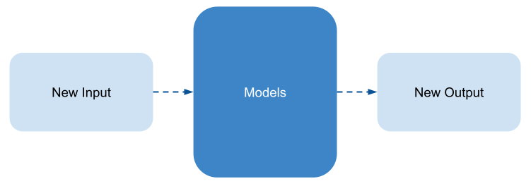
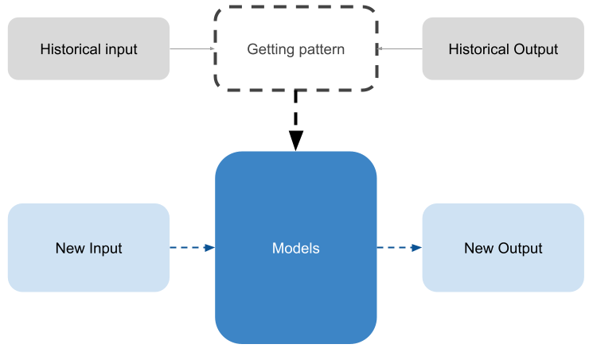

Introduction to Machine Learning
Welcome to the fascinating world of machine learning! In today’s digital era, where data is abundant and insights are crucial, machine learning has emerged as a revolutionary field. In this blog post, we will delve into the fundamentals of machine learning, exploring its definition, significance, applications, drawbacks, and how it operates.
What is Machine Learning?
“Machine learning is the field of study that gives computers the ability to learn without being explicitly programmed.” - Arthur Samuel, 1959
Machine learning, as a subset of artificial intelligence (AI), seeks to emulate the functioning of the human brain. So, what exactly is machine learning? As defined by Arthur Samuel, it involves granting computers the capacity to learn without explicit programming. This fundamental distinction sets it apart from traditional programming.
In traditional programming, every intricate detail and step needed to solve a problem must be explicitly defined. In contrast, with machine learning, we no longer need to specify every rule and step. Instead, machine learning algorithms learn autonomously from data, identifying patterns and making informed decisions.
To illustrate, consider the task of building an email spam detector: - In traditional programming, we would teach the program the characteristics of spam emails. For instance, if an email contains keywords such as “for you,” “special offer,” “discount,” or “credit card,” it would be classified as spam; otherwise, it would not. - Conversely, in the context of a spam detector employing machine learning, we need not explicitly define the rules and steps to detect spam. Machine learning algorithms learn organically from the content, timing, intensity, and various other factors associated with emails, autonomously identifying patterns indicative of spam.
This ability of machine learning to learn and adapt autonomously has contributed to its popularity and rapid development. Now, let’s explore how machine learning works.
How Machine Learning Works?
Comparison with Traditional Programming
Traditional Programming: - We directly provide computers with sets of rules to implement. 
Machine Learning: - We feed historical data, containing problem instances and their corresponding correct results. - The machine then formulates its own rules, which we typically refer to as models. - These models are then applied to future problems. 
Example
For instance, let’s consider the task of developing software that can differentiate between images of cats and chickens.
Using Traditional Programming: We would need to instruct the computer on the rules for identifying cats and chickens: 1. Count the number of feet. If there are two, classify it as a chicken; otherwise, it is a cat. 2. Count the number of ears. If there are two, classify it as a cat; otherwise, it is a chicken. We would also need to establish rules for fur, eyes, wings, and any other relevant factors. However, what if a photo is taken from an angle that makes it appear to have two ears, but it actually has two feet? We would need additional rules to handle each possible error scenario. Consequently, developing such software using traditional programming methods would require a considerable amount of code.
Using Machine Learning: In this case, we require a dataset comprising numerous photos of cats and chickens, accompanied by their corresponding labels. Similar to how we teach a child to differentiate between cats and chickens by directly showing them examples, machine learning algorithms learn by processing vast amounts of labeled data. The more examples we provide, the more accurate their identification skills become. By leveraging machine learning, the lengthy code required in traditional programming can be reduced to just a few lines. Furthermore, machine learning enables increased accuracy and reduced error rates.
You may wonder, how exactly does machine learning achieve this? How does it learn from historical data? Addressing these questions would necessitate a more in-depth explanation, which we can explore in a future opportunity.
When Should We Use Machine Learning?
According to the renowned book “Hands-On Machine Learning with Scikit-Learn, Keras, and TensorFlow” by Aurélien Géron, there are three conditions when machine learning should be used instead of traditional programming:
- Complexity: Machine learning is suitable for problems that would require an extensive list of rules when using traditional approaches. For example, building a chatbot capable of handling the wide array of random inputs from users would be virtually impossible to accomplish through explicit rule-based programming. Machine learning algorithms excel at tackling such challenges.
- Fluctuating Environments: Consider the case of an email spam detector. Spammers continuously modify their tactics, changing keywords, spellings, and formats to evade detection. Machine learning possesses the ability to automatically update its models by incorporating new data incrementally, ensuring it remains effective in dynamic environments.
- Big Data Analysis: Machine learning proves invaluable in extracting insights from vast amounts of complex data. Analyzing buying patterns, classifying customers, and addressing similar tasks would be laborious and time-consuming without machine learning. By leveraging its capabilities, we can efficiently identify patterns within enormous datasets.
Conclusion
- In conclusion, machine learning is a fascinating field that empowers computers to learn and make decisions without explicit programming. It has become indispensable in today’s data-driven world, where the abundance of data and the need for insightful analysis are paramount.
- We explored the definition of machine learning and how it differs from traditional programming. Machine learning algorithms learn from historical data, enabling them to identify patterns and make predictions or decisions. This approach offers significant advantages, such as increased accuracy, adaptability to changing environments, and efficient analysis of large datasets.
- Knowing when to use machine learning is crucial. We discussed three conditions where machine learning shines: when solving complex problems that would require an extensive list of rules in traditional programming, in fluctuating environments where rules change over time, and in scenarios that involve analyzing big data for insights.
- As technology advances and the field of machine learning continues to evolve, its applications and impact will only expand. By understanding the fundamentals of machine learning, its capabilities, and its appropriate use cases, you can harness its power to unlock new possibilities in various domains.
- So, step into the realm of machine learning and unleash the potential of intelligent algorithms to drive innovation, solve complex problems, and uncover valuable insights from data.